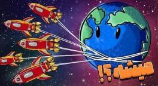

اگر بخواهیم زمین را از مدارش تکان بدهیم چند سفینه لازم است؟

اگر بخواهیم زمین را از مدارش حرکت بدهیم، چقدر سفینه و سوخت لازم داریم؟ سؤال خفنی است. شاید اول فکر کنی این ایده یکجورهایی غیرممکن است؛ ولی خب ما عاشق همین اینور و آنورهای عجیب و چالشبرانگیزیم.
چقدر نیرو لازم است؟
اول باید وزن زمین را بدانیم. جرم زمین حدود ۵٫۹۷ × ۱۰۲۴ کیلوگرم است؛ عددی سرسامآور. فرض کنیم فقط بخواهیم با یک شتاب خیلی کوچک تکانش بدهیم: یک میلیمتر بر مجذور ثانیه، یعنی یکهزارم متر بر مجذور ثانیه. هرچه شتاب کمتر باشد حساب سادهتر میشود.
طبق قانون نیوتون، نیرو برابر جرم ضرب در شتاب است. میشود چیزی حدود ۵٫۹۷ × ۱۰۲۱ نیوتون. اینقدر نیرو لازم است تا زمین را با همین شتاب ریز جابهجا کنیم.
چند سفینه؟
حالا ببینیم چند سفینه این نیرو را میسازند. فرض میکنیم هر سفینه بتواند یک گیگانیوتون نیرو بدهد. بشر هنوز چنین موتوری نساخته. موتور رپتور اسپیسایکس حدود ۲۲۰۰ کیلونیوتون قدرت دارد و از پیشرفتهترین موتورهای امروز است. یک گیگانیوتون تقریباً ۴۵۰ برابر یک رپتور است. با این حال فرض میگیریم برای هر سفینه موتوری ساختهایم که همان یک گیگانیوتون را بدهد.
حسابش ساده است: نیروی کل تقسیم بر نیروی هر سفینه. برای این کار باید حدود ۶ تریلیون سفینه داشته باشیم. بله، شش تریلیون.
انرژی را از کجا بیاوریم؟
فقط برای تکان دادن زمین در یک ثانیه، کار انجامشده حدود ۲٫۹۸۵ × ۱۰۱۸ ژول است. اما اگر هر کدام از آن شش تریلیون سفینه در هر ثانیه ۱۰۹ ژول بسوزاند، انرژی کل میشود ۶ × ۱۰۲۱ ژول؛ یک عدد با ۲۱ صفر جلوی شش.
هیچ منبع انرژی امروز زمین این عدد را یکجا نمیدهد. یک نیروگاه هستهای معمولی سالانه حدود ۳ × ۱۰۱۶ ژول میسازد. برای رسیدن به آن انرژی باید حدود ۲۰۰ هزار نیروگاه داشته باشیم، در حالی که حالا کمتر از ۵۰۰ تا داریم. اگر بخواهیم با نفت برویم، باید حدود ۱۵۰ تریلیون لیتر بسوزانیم؛ نه فقط ذخایر خودمان، بلکه انگار باید سیارههای دیگری پیدا کنیم که روزی حیات داشتهاند و نفتشان را هم بیاوریم.
خورشید در هر ثانیه حدود ۳٫۸ × ۱۰۲۶ ژول میفرستد. اگر حتی تکهای کوچک از این انرژی را با صفحههای خورشیدی در فضا جمع کنیم، شاید به عددمان برسیم. باز هم فرض میگیریم انرژی جور شده.
چطور سفینهها را به زمین وصل کنیم؟
عجیبترین بخش کار، بستن سفینهها با طنابهای غول است. هر سفینه باید با یک طناب به زمین وصل شود تا نیرویش منتقل شود. فرض کنیم طول هر طناب برابر شعاع زمین باشد، یعنی ۶۳۷۱ کیلومتر. برای شش تریلیون سفینه، طول کل طنابها حدود ۳٫۸ × ۱۰۱۶ کیلومتر میشود. با این مقدار میشود صدها میلیون بار دور زمین طناب پیچید. این حجم را از کجا بیاوریم و چطور بسازیم، خودش یک داستان دیگر است.
برای وصل کردن باید لنگرگاه روی سطح بسازیم. اگر ۳۶۰ نقطه در طول جغرافیایی در نظر بگیریم و هر نقطه دستکم یک میلیون متر مکعب بتن بخواهد، حجم کل به صدها میلیون متر مکعب میرسد. یک کارخانه بتن برای این حجم قرنها وقت میخواهد؛ اگر بخواهیم در یک سال تمام شود، باید صدها کارخانه همزمان کار کنند.
برای خود طناب بهتر است نانولولهٔ کربن باشد؛ سبک است و حدود صد برابر فولاد تاب میآورد. حتی با این ماده هم ساختن طنابی برای جابهجا کردن زمین، چندین برابر ذخیرهٔ کربن زمین و هزاران سال وقت میخواهد.
پس ایده قشنگ است، عددها هم درمیآیند، ولی سفینه، سوخت، بتن و طناب همه از حد زمین بزرگترند. تا فکر بعدی، کنجکاو بمان.